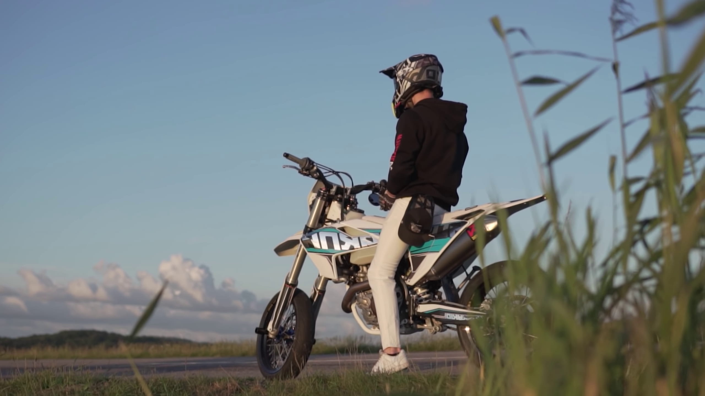
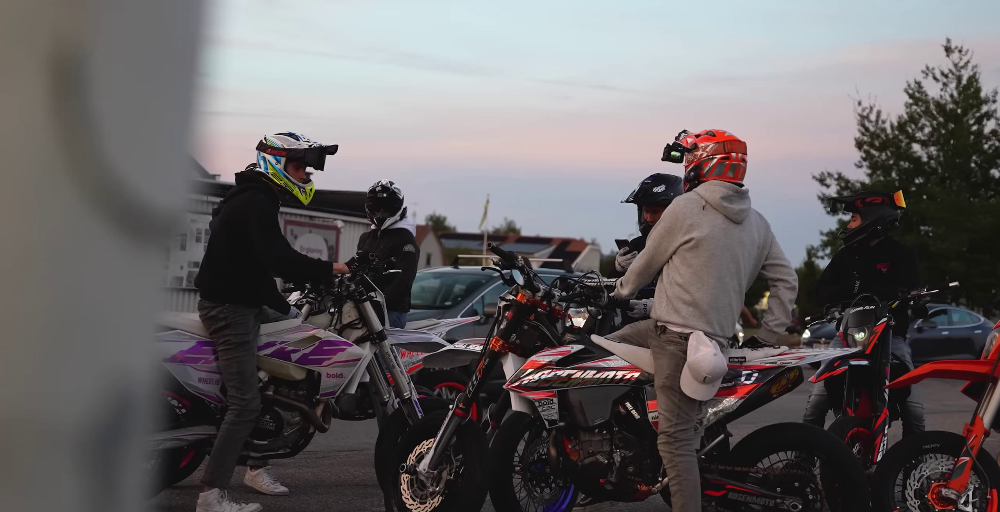

NAŠA MOTO FILOZOFIJA
Sloboda bez granica
Za nas, motocikl nije samo prevozno sredstvo – to je radikalno bekstvo iz zone komfora. To je onaj trenutak kada svet iza vizira postaje tih, a jedini zvuk koji čuješ je puls mašine ispod tebe.
Život se zapravo ne dešava dok sediš. On počinje tek kada okreneš ručicu gasa i ostaviš sve brige u retrovizoru. Osećaj slobode na dva točka je ono što nas gura napred, kroz svaku krivinu i preko svakog horizonta.


Tvoj kompas za sledeću avanturu
Znamo da odabir "prave" mašine nije samo stvar specifikacija – to je traženje partnera za putovanje koje tek treba da se desi. MotoEnciklopedija postoji da ti pomogne da prepoznaš onu mašinu koja će tvoju viziju slobode pretvoriti u stvarnost.
Bilo da tražiš sirovu snagu za osvajanje planinskih prevoja ili okretnost za gradske ulice, mi smo ovde da razjašnjavamo karakteristike motora. Fokusiraj se na ono što je najbitnije: osećaj življenja kroz vožnju.